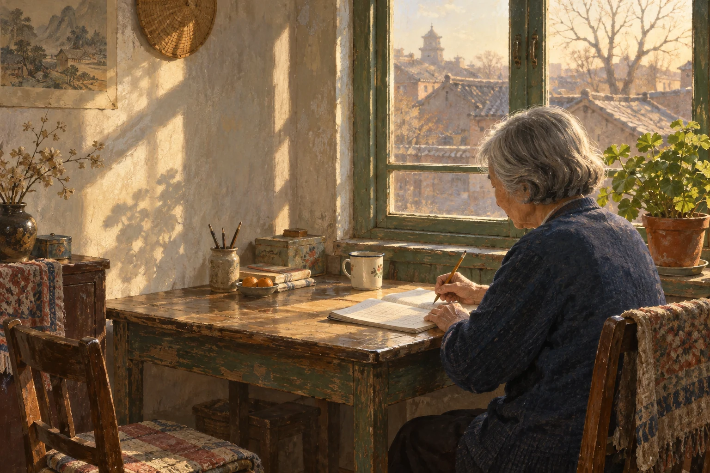
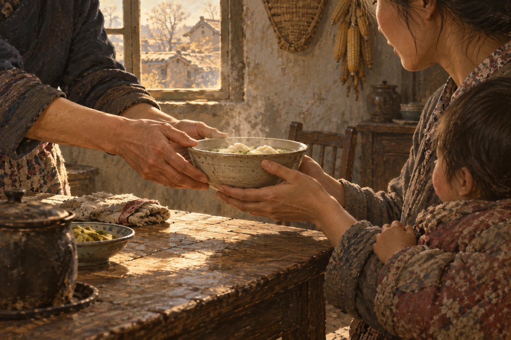
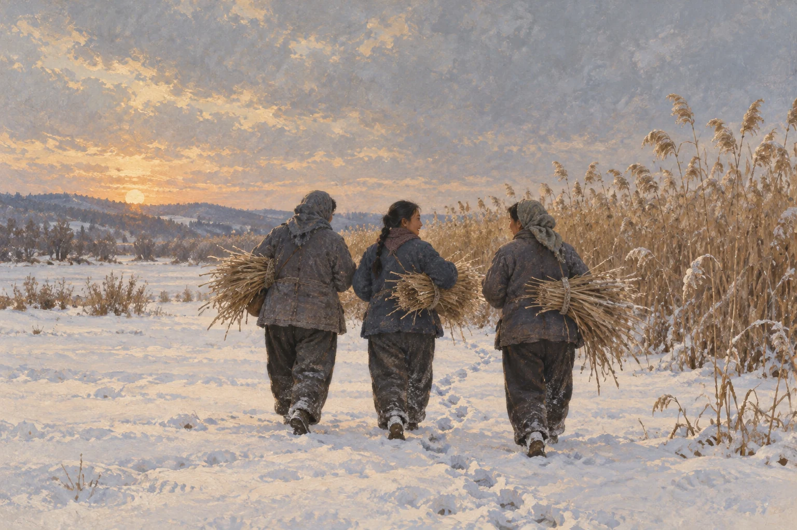
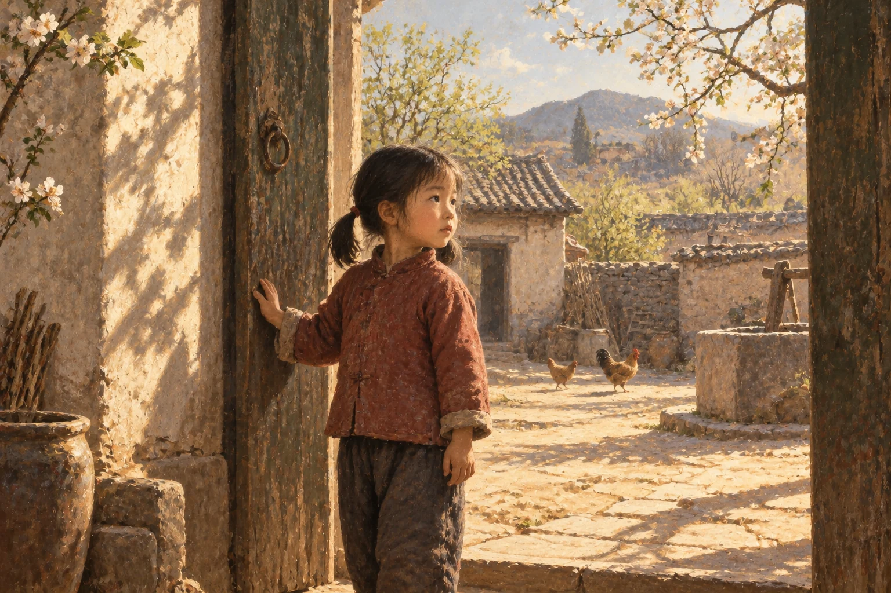

姜淑梅



一段人生
从童年，到八十岁。
请开启 JavaScript 以翻阅相片集。故事来源
姜淑梅从童年走到晚年，经历养育、迁徙与失去，随后重新学习。十三幅画面，选取她与家人公开讲述中的片段。
童年求学经历在来源中说法不一：本人概括为没念过书，采访记载曾短暂入学。本作采用“没能继续上学”。年龄沿用公开讲述中的口径，不将虚岁直接换算成年份。
画面均为 AI 艺术重构，并非真实照片、住宅或手稿。红褂女孩的构图是想象，晚年画过童年的自己有报道依据。纸上重现旧画面的效果，是创作性的记忆蒙太奇。
我们没有补写她的结局。“等我老了”来自 2019 年采访。声音为程序合成，默认关闭。